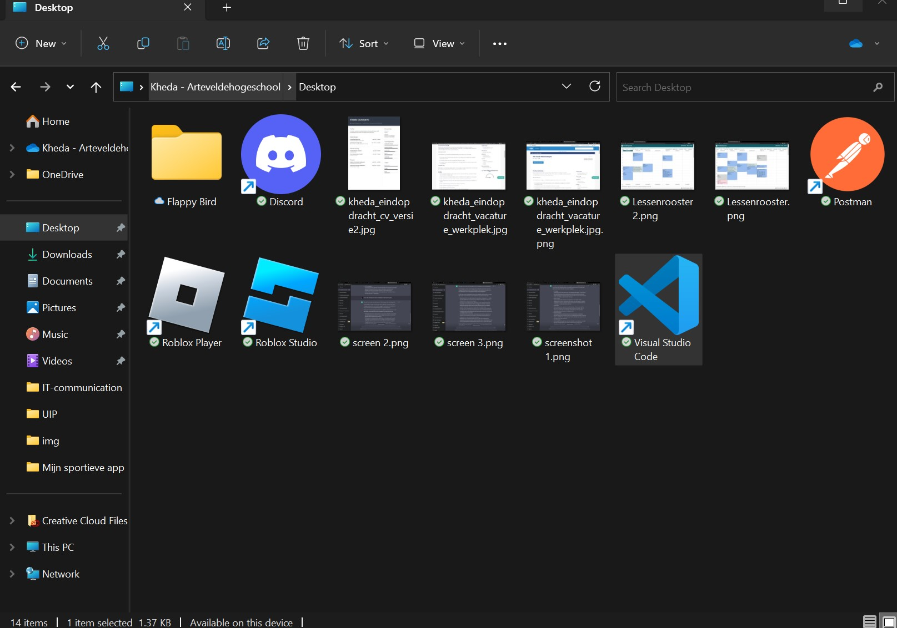
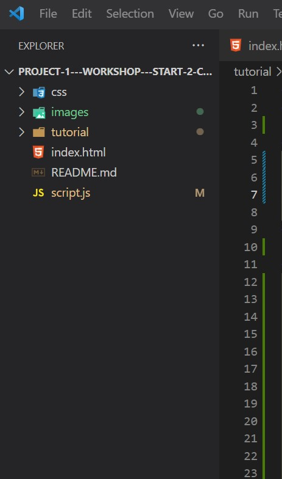
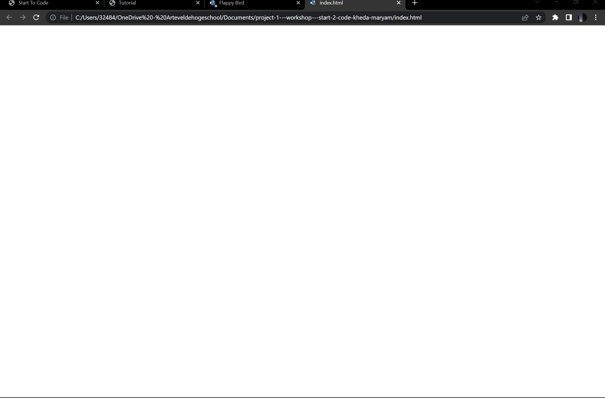
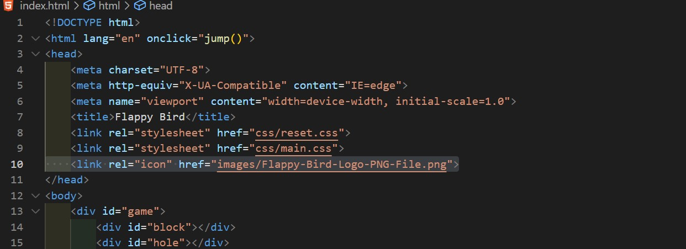
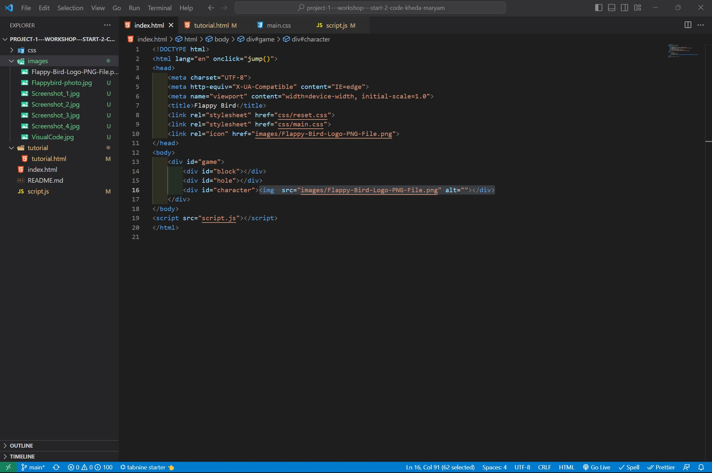
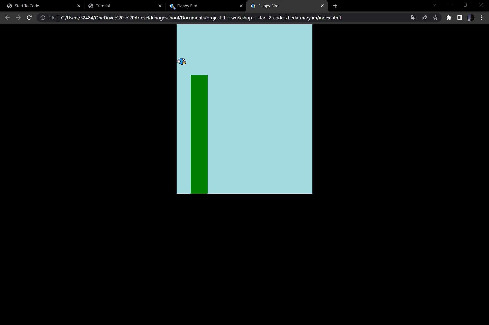

Iedereen kent wel Flappy bird, daarom gaan samen een simpel en eenvoudig game bouwen.
Door te klikken
met je muis kan je springen tussen de palen.
Een code-editor is nodig, daarom gebruiken Visual
Studio Code.
Maak een nieuwe map aan op je bureaublad en geef als naam Flappy
Bird.
Open het programma Visual Studio Code en open je gemaakte folder Flappy Bird.
Als programmeur moet je altijd duidelijk werken, bouw onderstaande mappen- en bestandenstructuur aan. Let op images is een map voor fotos en CSS is een map voor je main.css
Binnen de map images zit een foto van flappy bird. Je mag zelf op google zoeken wat jij als foto wilt gebruiken.
Klik met je rechtermuis op index.html, daarna open je het met default browser. Je zal dan een lege webpagina zien, dat is normaal!
 Nuuuuuuu gaan we coderen zodat we af zijn van die witte webpagina.
Kopieer onderstaande code in jouw index.html-bestand. Sla dat bestand op.
We hebben bij onze HTML-bestand een icon toegevoegd, je mag jouw foto gebruiken dat je zal gebruiken voor het vogeltje. De icon zorgt ervoor dat je een icon ziet bovenaan op je tablad
Bij id=character moet je je image-structuur wel aanpassen naar de naam van je foto.
Dit is een basis-structuur, we hebben een titel toegevoegd en wat je allemaal moet zien zoals het vogeltje, palen etc...
Nu kan je de onderstaande code kopieëren in jouw main.css-bestand. Sla het bestand dan op.
allowpaymentrequest frameborder="0">Nu vraag je je waarschijnlijk af "wat doe ik?". Met CSS kan je stijlen van je tekst aanpassen zoals: kleur, achtergrond-kleur, lettertype en zelfs animaties.
Als alles goed is, moet je op je pagina zo er uit zien. Herlaad wel je pagina!
Je mag veranderen wat je maar wilt bv achtergrond-kleur.
Eerst en vooral moet je de link leggen naar het Javascript-bestand, dat doe je door een stuk code toe te voegen zoals hieronder.
Nu mag je de onderstaande code kopieeren en plakken in je strong.js-bestand
Kort uitleg: We hebben een jump() functie toegevoegd op onze HTML zodat het functie activeert wanneer je ergens klikt. Meer uitleg tijdens de workshop.